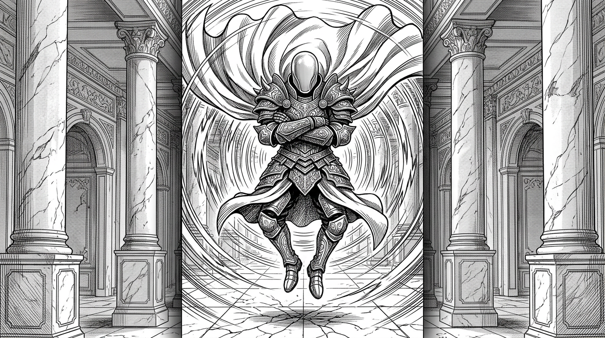

Те, кто не смотрит глазами

Их называют Золотыми. Не за доблесть — за блеск, от которого больно глазам.
Королевская Гвардия Аурумгарда — это не армия в привычном понимании. Это культ. Каждый Гвардеец отбирается из дворянских семей в возрасте шести лет и проходит ритуал Сокрытия Взора: ему надевают глухой шлем без прорезей, который он будет носить до конца службы. Десять, двадцать, иногда тридцать лет — ни разу не увидев мира собственными глазами.
Вместо зрения Гвардейцы используют кольца Иллюзий и Гравитации. Они ощущают пространство через искажение гравитационных полей — чувствуют массу, движение, плотность каждого объекта вокруг. Иллюзии транслируют им «чистую» картину мира — без цвета, без света, без отвлекающих деталей. Только формы и силы.
Их броня весит около двухсот килограммов — и при этом Гвардейцы парят. Они не ходят. Они скользят над землёй, как тяжёлые золотые призраки. Удар Гвардейца совмещает вес брони, усиленный гравитационным импульсом, — двести килограммов металла, разогнанного до скорости конной атаки, сконцентрированных на кончике меча.
Ходят слухи, что под шлемом у самых старых Гвардейцев — уже не лицо. Что магия Иллюзий, десятилетиями заменявшая им зрение, меняет структуру мозга. Что они видят мир так, как не видит никто, — и именно поэтому их невозможно обмануть.
Впрочем, это лишь слухи. Никто из тех, кто встречался с Гвардейцем в бою, не выжил достаточно долго, чтобы их подтвердить.